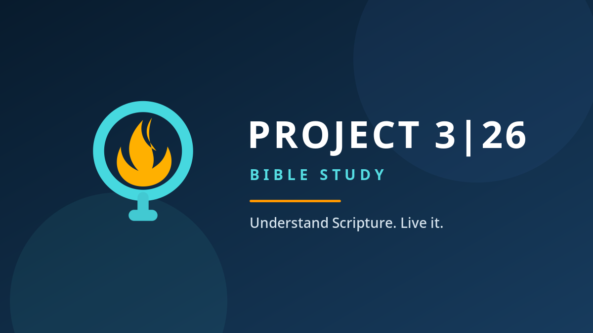

Listen
Start with a concise daily teaching that gives you the background and big idea of the chapter.
Meet the heart behind Project 3|26
A message from the founder
Too many people want to understand the Bible but feel lost, overwhelmed, or unsure where to begin. Project 3|26 was created to give everyday people a clear path through Scripture, one chapter at a time.
Dr. Brian CooperFounder, Project 3|26
Start your journeyYou do not need more guilt about reading the Bible.
You need a clear path through it.A Bible study built for real life
Project 3|26 guides you through every chapter of Scripture with clear context, thoughtful teaching, and practical application, one day at a time.

Simple enough for every day
No seminary degree. No hour-long homework. Just a thoughtful guide to help you see what is there, understand what it means, and live it.
Start with a concise daily teaching that gives you the background and big idea of the chapter.
Open Scripture with a clearer sense of what to watch for and why the passage matters.
Move from information to transformation through reflection, application, and prayer.
Inside every study
Each lesson is designed to help ordinary people engage Scripture with confidence, consistency, and spiritual depth.

FREE Complete book trial
Try Project 3|26 free
Experience Project 3|26 before choosing a plan. Walk through all 21 chapters of John with the same clear context, daily audio teaching, reflection, application, and prayer subscribers receive.
The goal is not to finish the Bible. The goal is for the Bible to form you.
Project 3|26 helps you build a life around Scripture, not just squeeze Scripture into your life.
Choose your path
Start today and build a Bible-reading rhythm you can actually sustain.
Monthly
Flexible access with no long-term commitment.
Choose monthlyAnnual
Commit to the rhythm and stay focused all year.
Choose annualFounder Lifetime
Lifetime access plus future founder benefits.
Become a founderWhy Project 3|26
Project 3|26 was built from a simple conviction: the Bible can be deeply understood by everyday people when someone helps illuminate the path.
The name comes from the full journey, about 3.26 years to walk through all 1,189 chapters, one faithful day at a time.
One complete journey through Scripture
Your next chapter starts here
Understand it. Live it. Let it shape you.
Start Project 3|26 today Update this link inindex.html to your final checkout page.